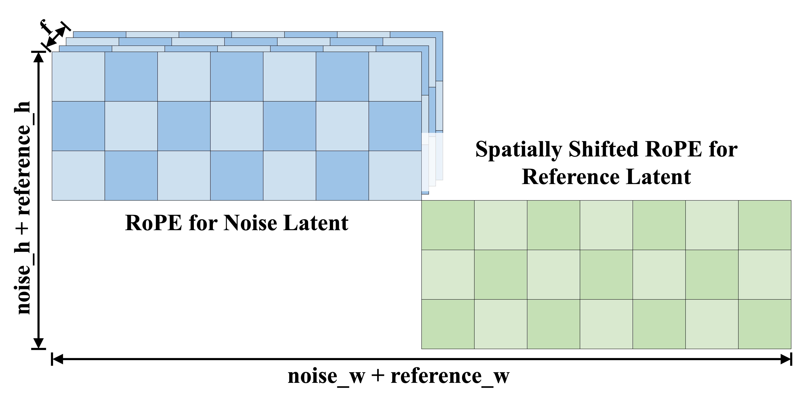
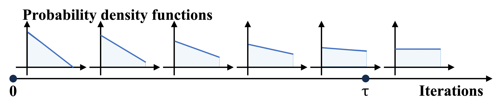
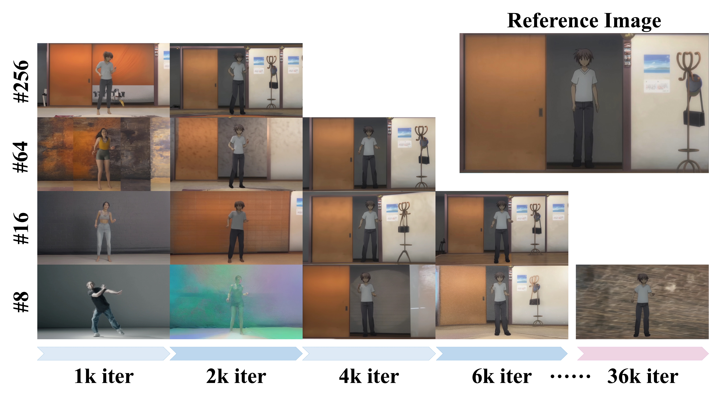

Method


Illustration of spatially shifted RoPE for the reference latent. We also replace the Rotary Position Embedding (RoPE) used in self-attention with the shifted RoPE.
The reference latent does not share RoPE with the noise latent. It employs the spatially shifted RoPE at the first frame, where the shifting is according to the height and width of the noise latent.

Illustration of low-noise warmup strategy. When iteration i is smaller than the maximum warmup threshold τ , there is a greater probability of sampling small timesteps.
As the iteration i increases, the probability of sampling large timesteps rises. Once i exceeds τ , the sampling distribution degrades to uniform sampling.

Visualization of different batch configurations on the RealisDance-Val dataset.
'#' denotes the batch size.
We suggest using a large batch size along with a small number of iterations for fine-tuning, which facilitates rapid convergence while maximally preserving the prior knowledge of the foundation model.